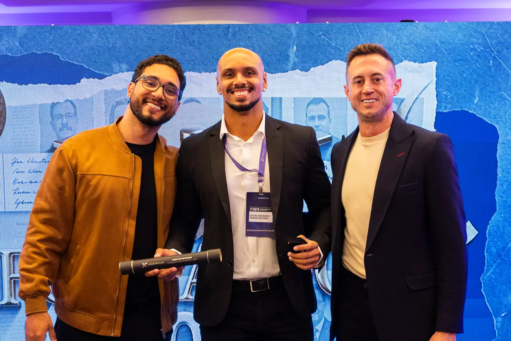

Business Intelligence Analyst
Ten years chasing debts. Now, I chase answers in the data.
I'm Lucas Delfino. I started negotiating on the front line of Credit & Collections and now build dashboards, data models and automations in Power BI, SQL and Python that answer the questions the operation actually asks.
Brazilian citizen. For Ireland I would need an employment permit, and I'm glad to handle the paperwork and the application fee to make it easy for the employer.
Reports born from business questions
A visual summary of each piece of work, with the problem and the solution in a few lines. For the technical detail, each project's case covers modelling, DAX and decisions.
Learning by building, and by competing
My MBA in BI & Analytics 360 had a data challenge at the end. My squad worked together remotely for over a year and took 1st place.

- 1st placeData Challenge 4, MBA in Business Intelligence & Analytics 360.
- Remote teamworkMore than a year building with people I only met in person at the ceremony.
- Consistency26 challenges and 56 certificates on the platform along the way.
From the collections phone to the data model
I went through every seat in the operation before reaching BI. That is why my indicators start from the question of the person on the front line, not from the visuals.
Technical tools, business repertoire
Everyday stack
From raw data to the executive report.
Business domain
Education
- MBA in BI & AnalyticsXperiun · UNIFECAF2025–2026
- Systems Analysis and DevelopmentCentro Universitário FAM2023–2025
- Data Analysis Training CourseXperiun | Data Analytics2025
At Xperiun
Continuous practice with challenges built on real problems.
Got an operation that needs faster answers?
I'm looking for BI and Analytics roles in Ireland or remote, especially in credit, collections and financial services. Send me a message and let's talk. I'm a Brazilian citizen, so I would need an employment permit, and I'm happy to take care of the paperwork and the application fee.